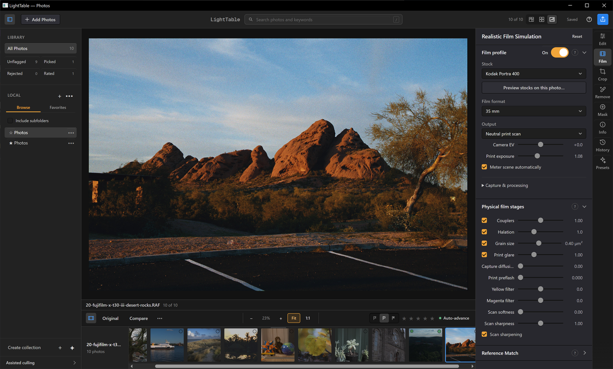

LightTable for Windows
A free digital darkroom for 64-bit Intel and AMD PCs. This first Windows release is experimental.
Windows 0.6.0 is being validated. A download appears below when it is published.
See the Windows app →
Choose your processor
Check Settings → System → About → System type. A native ARM64 package is not available.
Download and install
Choose your processor to check published Windows releases.
- Save the installer and matching checksum file in the same folder.
- Open the installer’s Properties → Digital Signatures. The release certificate identifies Nicholas Reville; the app publisher metadata is Chonkers LLC.
- Run the installer, then open LightTable from the Start menu. It installs for your Windows user account.
The installer includes Microsoft WebView2. You do not need a separate Python or Node installation.
Verify the download with PowerShell
Open PowerShell in your Downloads folder and replace the filename below with the installer you downloaded. Compare the result with the matching checksum file.
Get-FileHash .\LightTable-0.6.0-windows-x64-setup.exe -Algorithm SHA256Your photos and saved edits
LightTable keeps your originals in their existing folders. To update, close LightTable and run the new installer. To remove the application, use Windows Settings → Apps → Installed apps → LightTable → Uninstall. Removing the app preserves photos, catalogs, preferences and caches.
For managed installations, the installer and uninstaller accept /S for silent operation. Close LightTable before either operation.
Experimental Windows support
The x64 build targets Windows 10 and 11 and requires a working DirectX 12 graphics driver. The signed 0.6.0 candidate passed offline installation and native editing, 16-bit TIFF export and reopening on Windows 10 and Windows 11 test VMs. Windows 10 also passed installation with WebView2 initially absent; Windows 11 was tested with its preinstalled runtime.
The same candidate passed installation, repair, removal and native editing/export checks under x64 emulation on Windows 11 ARM. This does not establish native ARM64 support or physical GPU/display validation.
Windows downloads remain pending while the remaining prerequisite and release-verification checks are resolved. Read the test results and remaining checks.
Microsoft Store submission is in preparation. The website installer is a separate download.
Report a problem · Contact support · Technical Windows documentation